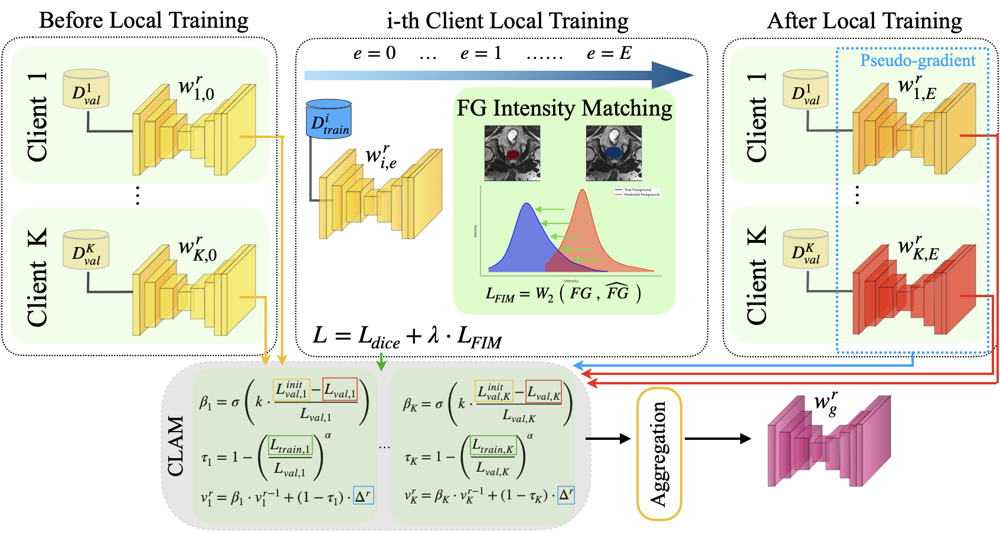

MICCAI 2025, spotlight
Federated segmentation with client momentum
FedCLAM sets a momentum and a dampening term for every client from its own training, and adds a loss that aligns foreground intensities across scanners.
Segmentation results per client
Test Dice on every client of the fundus and prostate MRI benchmarks, from Tables 1 and 2. Pick a method to set it beside FedCLAM.
See the tables in the paperHigher Dice than eight federated methods
An average Dice of 88.82 on fundus, against 87.93 for FedEvi, the next best, and 93.74 on prostate MRI, against 93.61 for HarmoFL.
- FedAvg
- FedAvgM
- FedEvi
- FedFA
- FedProx
- FedSAM
- FedDyn
- HarmoFL
Two additions to federated averaging
Switch both off and the method is FedAvg. Each raises Dice on its own, and the two together raise it most, on both datasets.
Momentum adapted to each federated client
A client’s momentum grows with how far local training cut its validation loss, and a dampening term from its training to validation loss ratio slows a client that overfits.
- Fundus, over FedAvg
- +3.55
- Prostate MRI
- +0.73
Foreground intensity loss for segmentation
A 2-Wasserstein loss between pixel intensities inside the predicted mask and inside the ground truth, so the model leans less on a scanner’s brightness and contrast.
- Fundus, over FedAvg
- +2.21
- Prostate MRI
- +0.30

Questions about FedCLAM
How do I cite the research?
@inproceedings{siomos2025fedclam,
title = {FedCLAM: Client Adaptive Momentum
with Foreground Intensity Matching for
Federated Medical Image Segmentation},
author = {Siomos, Vasilis and
Passerat-Palmbach, Jonathan and
Tarroni, Giacomo},
booktitle = {Medical Image Computing and
Computer Assisted Intervention --
MICCAI 2025},
series = {Lecture Notes in Computer Science},
volume = {15965},
pages = {247--257},
year = {2025},
publisher = {Springer},
doi = {10.1007/978-3-032-04978-0_24}
}
Does my segmentation task need the intensity loss?
No. Client adaptive momentum alone reaches 88.27 Dice on fundus and 93.50 on prostate MRI. The intensity loss also lifts FedAvg on its own, from 84.72 to 86.93 on fundus.
Which settings does the code need?
The paper uses k = 1, α = 1 and an intensity loss weight of 0.01. Dice holds level for weights from 0.0001 to 0.01, and only a very large k lowers it.
Which data does the research use?
Fundus photographs from four clients, drawn from Drishti-GS, REFUGE and RIM-ONE DL, and prostate MRI from six centers, each center one client.